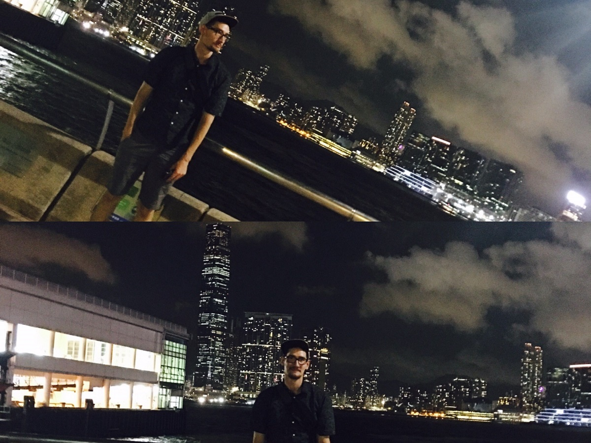

About Me
Among my pastimes and pursuits are: music, including performance, song-writing and music production; reading, particularly science fiction and fantasy; fishing, as well as camping and hiking; and gardening and cooking.
I grew up in Gainesville and started attending UF immediately after high school graduation. After
struggling
in school for a year, I decided
to work full time. While working on a remodeling crew, I found a passion for language. I returned to
school
and completed a Bachelor of Arts.
I found a job working at a Chinese restaurant while in my last semester at UF, where I could practice and
use
Mandarin every day,
as well as improve my communication and other "soft skills".
I was able to continue musical activities after being involved in high-school band through the band at my
church and other bands I was a part of. I also started
writing music and producing my own music.
Some of the above-mentioned bandmates have actually proven instrumental in introducing me to the world of
programming and development,
for which I am exceedingly grateful. While I still am passionate about natural language, I am now seeking
employment in the world of
software development and as such am learning as much as I can. Ultimately, I hope to be able to combine these two passions.
